pacman::p_load(sf, spatstat, tmap, tidyverse)Second-order Spatial Point Patterns Analysis
HANDS-ON EXERCISE 2 · PART 02
R spatstat G / F / K / L Monte Carlo
This is the second of the two Spatial Point Patterns Analysis readings for Hands-on Exercise 2: 2nd Order Spatial Point Patterns Analysis Methods. The first-order methods are in Part 01.
1. Overview
First-order analysis asked how intensity varies across space. Second-order analysis asks a different question: do the events interact? Given the number of points present, are they closer together than chance would produce (attraction / clustering), further apart (inhibition / regularity), or indistinguishable from random?
Four distance-based functions answer this at a range of scales:
| Function | Measures | Clustered when |
|---|---|---|
| G | distance from each event to its nearest event | curve rises above the CSR envelope |
| F | distance from random locations to the nearest event | curve falls below the CSR envelope |
| K | cumulative count of events within distance r | curve rises above the envelope |
| L | K, variance-stabilised to a flat zero line | curve rises above zero |
Each is tested against a Monte Carlo envelope built from simulated CSR patterns. That envelope is the whole point: a raw G or K curve on its own tells me nothing, because almost every real pattern deviates somewhat from the theoretical CSR line.
2. The Data
The same two layers as Part 01 — Child Care Services and the Master Plan 2019 Subzone Boundary (No Sea), both GeoJSON from data.gov.sg, both projected to SVY21 (EPSG:3414).
3. Getting Started
4. Data Import and Preparation
Repeating the Part 01 preparation so this page stands on its own — each Quarto page is its own R session.
mpsz_sf <- st_read("data/geospatial/MasterPlan2019SubzoneBoundaryNoSea.geojson",
quiet = TRUE) %>%
st_transform(crs = 3414)
childcare_sf <- st_read("data/geospatial/ChildCareServices.geojson",
quiet = TRUE) %>%
st_transform(crs = 3414)set.seed(1234)
childcare_ppp <- as.ppp(childcare_sf)
childcare_ppp_jit <- rjitter(childcare_ppp, retry = TRUE, nsim = 1, drop = TRUE)
any(duplicated(childcare_ppp_jit))[1] FALSEThe seed is fixed because every envelope on this page is built from simulated CSR patterns. Without it the exact distance at which each observed curve crosses its envelope shifts by a few tens of metres on every rebuild, which makes any number I quote in the text wrong the next time the site is deployed.
Two planning areas are used as study areas, as in the reference chapter: Choa Chu Kang and Tampines.
cck <- mpsz_sf %>% filter(PLN_AREA_N == "CHOA CHU KANG")
tm <- mpsz_sf %>% filter(PLN_AREA_N == "TAMPINES")
cck_owin <- as.owin(st_union(cck))
tm_owin <- as.owin(st_union(tm))
childcare_cck_ppp <- childcare_ppp_jit[cck_owin]
childcare_tm_ppp <- childcare_ppp_jit[tm_owin]
childcare_cck_ppp.km <- rescale.ppp(childcare_cck_ppp, 1000, "km")
childcare_tm_ppp.km <- rescale.ppp(childcare_tm_ppp, 1000, "km")data.frame(
area = c("Choa Chu Kang", "Tampines"),
points = c(npoints(childcare_cck_ppp), npoints(childcare_tm_ppp)),
area_km2 = round(c(area(cck_owin), area(tm_owin)) / 1e6, 2)
) area points area_km2
1 Choa Chu Kang 74 6.12
2 Tampines 117 20.80par(mfrow = c(1, 2))
plot(childcare_cck_ppp, main = "Choa Chu Kang", cex = 0.7, pch = 19)
plot(childcare_tm_ppp, main = "Tampines", cex = 0.7, pch = 19)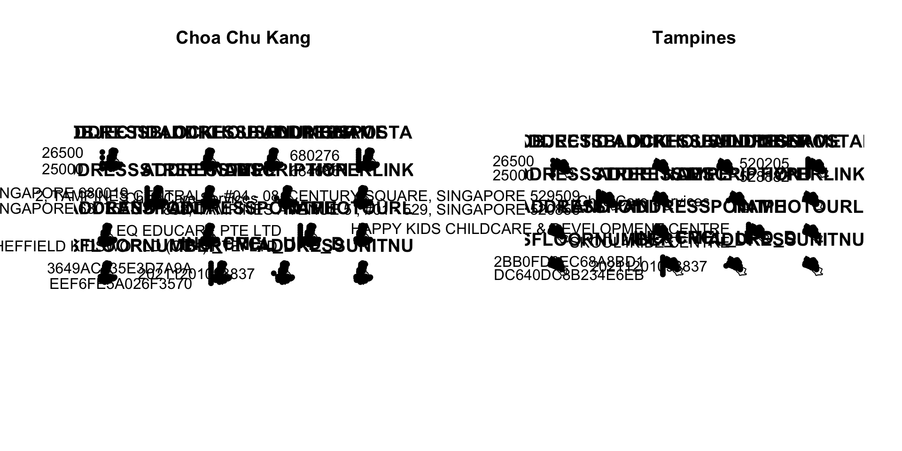
par(mfrow = c(1, 1))5. A Note on the Hypotheses and the Number of Simulations
For every test below:
\(H_0\): the distribution of childcare centres in the study area is randomly distributed. \(H_1\): the distribution is not randomly distributed.
\(H_0\) is rejected at the 95% level if the observed curve leaves the envelope built from the simulated CSR patterns.
On nsim. The reference chapter uses nsim = 999. I use nsim = 99 throughout this page. With 99 simulations the envelope is the pointwise minimum and maximum of the simulations, which corresponds to a two-sided significance level of 2/(99+1) = 0.02 — comfortably inside the 0.05 I am testing at, and it keeps this page rendering in seconds rather than minutes, which matters because the site is rebuilt on every deploy. Where the observed curve leaves the envelope below it does so by a wide margin rather than grazing the edge, so the extra simulations would not change the reading. A marginal result would be a reason to raise nsim, and I would.
6. G-Function: Nearest Neighbour Distances
The G-function is the cumulative distribution of the distance from each event to its nearest neighbouring event. Clustering pushes those distances down, so G rises faster than under CSR.
6.1 Choa Chu Kang
G_CK <- Gest(childcare_cck_ppp, correction = "border")
plot(G_CK, xlim = c(0, 500), main = "G function — Choa Chu Kang")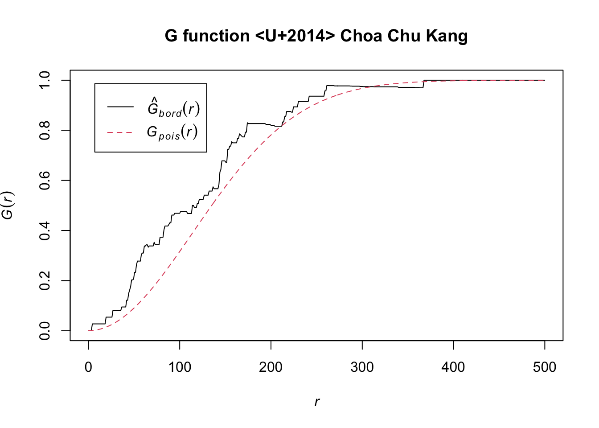
G_CK.csr <- envelope(childcare_cck_ppp, Gest, nsim = 99)Generating 99 simulated realisations of CSR ...
1, 2, 3, 4, 5, 6, 7, 8, 9, 10, 11, 12, 13, 14, 15, 16, 17, 18, 19, 20,
21, 22, 23, 24, 25, 26, 27, 28, 29, 30, 31, 32,
[27:04 remaining, estimate finish 2026-09-13 12:10:08]
33,
[25:50 remaining, estimate finish 2026-09-13 12:08:54]
34,
[24:40 remaining, estimate finish 2026-09-13 12:07:44]
35,
[23:34 remaining, estimate finish 2026-09-13 12:06:39]
36,
[22:32 remaining, estimate finish 2026-09-13 12:05:37]
37,
[21:34 remaining, estimate finish 2026-09-13 12:04:39]
38,
[20:39 remaining, estimate finish 2026-09-13 12:03:43]
39,
[19:46 remaining, estimate finish 2026-09-13 12:02:51]
40,
[18:57 remaining, estimate finish 2026-09-13 12:02:01]
41,
[18:09 remaining, estimate finish 2026-09-13 12:01:14]
42,
[17:25 remaining, estimate finish 2026-09-13 12:00:29]
43,
[16:42 remaining, estimate finish 2026-09-13 11:59:47]
44,
[16:01 remaining, estimate finish 2026-09-13 11:59:06]
45,
[15:22 remaining, estimate finish 2026-09-13 11:58:27]
46,
[14:45 remaining, estimate finish 2026-09-13 11:57:50]
47,
[14:09 remaining, estimate finish 2026-09-13 11:57:14]
48,
[13:35 remaining, estimate finish 2026-09-13 11:56:40]
49,
[13:03 remaining, estimate finish 2026-09-13 11:56:07]
50,
[12:31 remaining, estimate finish 2026-09-13 11:55:36]
51,
[12:01 remaining, estimate finish 2026-09-13 11:55:06]
52,
[11:33 remaining, estimate finish 2026-09-13 11:54:37]
53,
[11:05 remaining, estimate finish 2026-09-13 11:54:10]
54,
[10:38 remaining, estimate finish 2026-09-13 11:53:43]
55,
[10:12 remaining, estimate finish 2026-09-13 11:53:17]
56, [9:48 remaining] 57, [9:24 remaining] 58, [9:01 remaining] 59, [8:38 remaining] 60, [8:17 remaining] 61, [7:56 remaining] 62, [7:36 remaining] 63, [7:16 remaining] 64, [6:58 remaining] 65, [6:39 remaining] 66, [6:22 remaining] 67, [6:04 remaining] 68, [5:48 remaining] 69, [5:32 remaining] 70, [5:16 remaining] 71, [5:01 remaining] 72, [4:46 remaining] 73, [4:31 remaining] 74, [4:17 remaining] 75,
[4:04 remaining] 76, [3:51 remaining] 77, [3:38 remaining] 78, [3:25 remaining] 79, [3:13 remaining] 80, [3:01 remaining] 81, [2:49 remaining] 82, [2:38 remaining] 83, [2:27 remaining] 84, [2:16 remaining] 85, [2:05 remaining] 86, [1:55 remaining] 87, [1:45 remaining] 88, [1:35 remaining] 89, [1:25 remaining] 90, [1:16 remaining] 91, [1:07 remaining] 92, [58 sec remaining] 93, [49 sec remaining] 94, [40 sec remaining] 95,
[32 sec remaining] 96, [24 sec remaining] 97, [16 sec remaining] 98, [8 sec remaining]
99.
Done.plot(G_CK.csr, main = "G function with CSR envelope — Choa Chu Kang")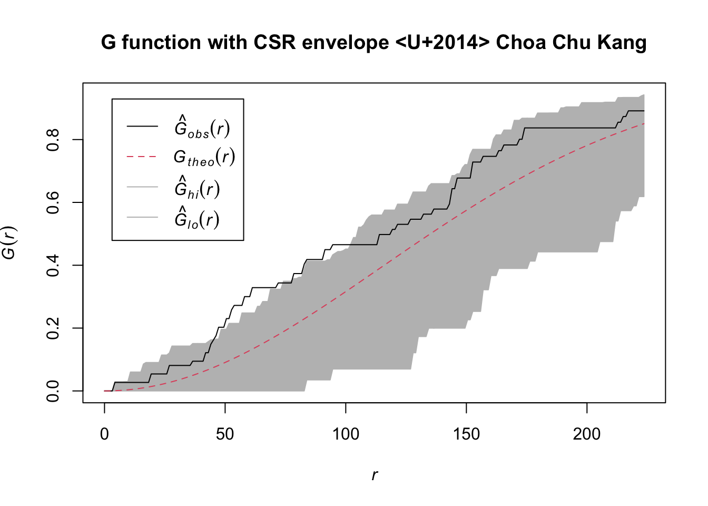
6.2 Tampines
G_tm <- Gest(childcare_tm_ppp, correction = "best")
plot(G_tm, xlim = c(0, 500), main = "G function — Tampines")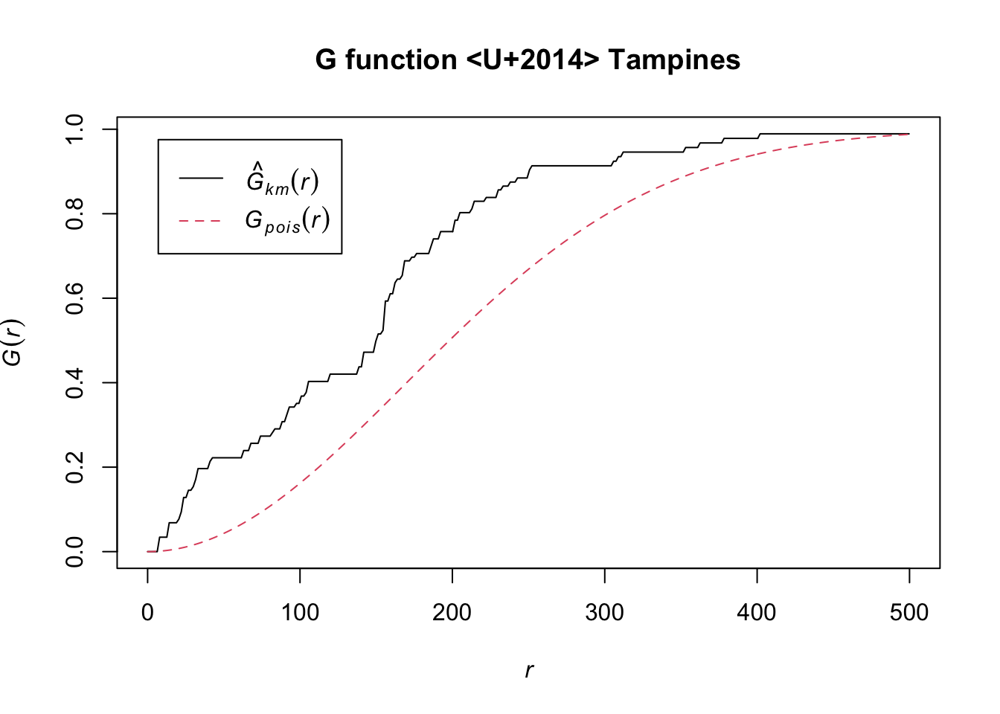
G_tm.csr <- envelope(childcare_tm_ppp, Gest, correction = "all", nsim = 99)Generating 99 simulated realisations of CSR ...
1, 2, 3, 4, 5, 6, 7, 8, 9, 10, 11, 12, 13, 14, 15, 16, 17, 18, 19, 20,
21, 22, 23, 24, 25, 26, 27, 28, 29, 30, 31, 32, 33, 34, 35, 36, 37, 38, 39, 40,
41, 42, 43, 44, 45, 46, 47, 48, 49, 50, 51, 52, 53, 54, 55, 56, 57, 58, 59, 60,
61, 62, 63, 64, 65, 66, 67, 68, 69, 70, 71, 72, 73, 74, 75, 76, 77, 78, 79, 80,
81, 82, 83, 84, 85, 86, 87, 88, 89, 90, 91, 92, 93, 94, 95, 96, 97, 98,
99.
Done.plot(G_tm.csr, main = "G function with CSR envelope — Tampines")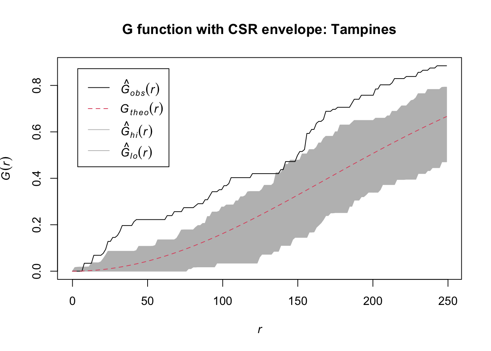
NoteReading the G plots
In both areas the observed G rises above the grey envelope, meaning nearest neighbours are closer together than CSR would produce — clustering. The range over which it does so differs sharply between the two areas, and that turned out to be the more interesting result. Rather than eyeball it off the plots, I compute the exact crossing ranges for all four functions in section 10 below.
7. F-Function: Empty Space Distances
The F-function measures the distance from an arbitrary location to the nearest event. Clustering leaves large empty gaps between clusters, so F rises more slowly than under CSR — the mirror image of the G result.
7.1 Choa Chu Kang
F_CK <- Fest(childcare_cck_ppp)
plot(F_CK, main = "F function — Choa Chu Kang")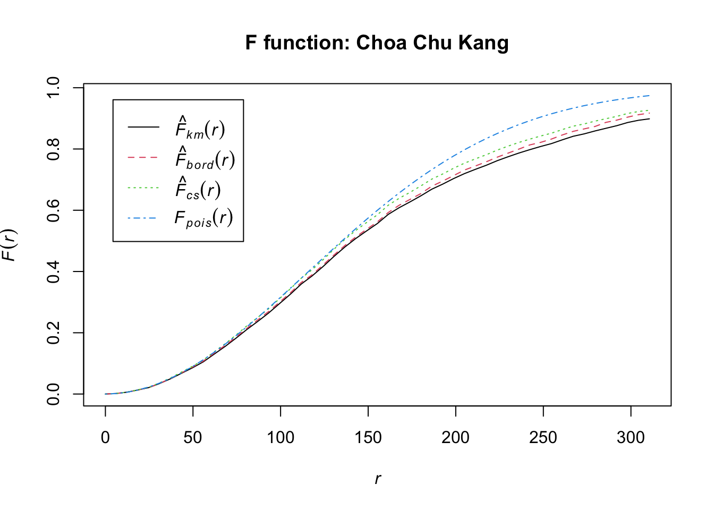
F_CK.csr <- envelope(childcare_cck_ppp, Fest, nsim = 99)Generating 99 simulated realisations of CSR ...
1, 2, 3, 4, 5, 6, 7, 8, 9, 10, 11, 12, 13, 14, 15, 16, 17, 18, 19, 20,
21, 22, 23, 24, 25, 26, 27, 28, 29, 30, 31, 32, 33, 34, 35, 36, 37, 38, 39, 40,
41, 42, 43, 44, 45, 46, 47, 48, 49, 50, 51, 52, 53, 54, 55, 56, 57, 58, 59, 60,
61, 62, 63, 64, 65, 66, 67, 68, 69, 70, 71, 72, 73, 74, 75, 76, 77, 78, 79, 80,
81, 82, 83, 84, 85, 86, 87, 88, 89, 90, 91, 92, 93, 94, 95, 96, 97, 98,
99.
Done.plot(F_CK.csr, main = "F function with CSR envelope — Choa Chu Kang")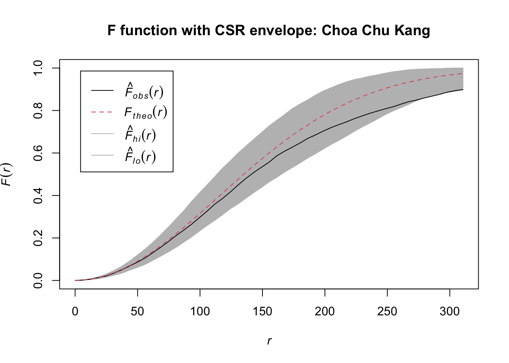
7.2 Tampines
F_tm <- Fest(childcare_tm_ppp, correction = "best")
plot(F_tm, main = "F function — Tampines")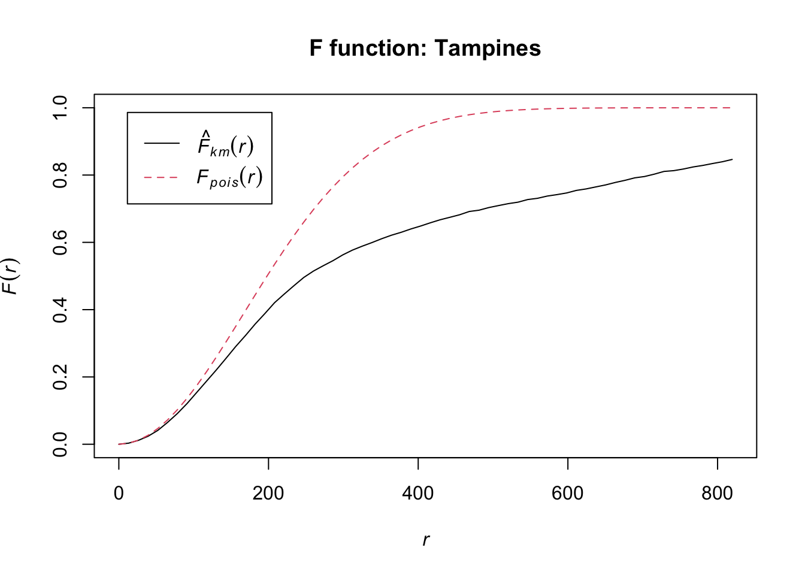
F_tm.csr <- envelope(childcare_tm_ppp, Fest, correction = "all", nsim = 99)Generating 99 simulated realisations of CSR ...
1, 2, 3, 4, 5, 6, 7, 8, 9, 10, 11, 12, 13, 14, 15, 16, 17, 18, 19, 20,
21, 22, 23, 24, 25, 26, 27, 28, 29, 30, 31, 32, 33, 34, 35, 36, 37, 38, 39, 40,
41, 42, 43, 44, 45, 46, 47, 48, 49, 50, 51, 52, 53, 54, 55, 56, 57, 58, 59, 60,
61, 62, 63, 64, 65, 66, 67, 68, 69, 70, 71, 72, 73, 74, 75, 76, 77, 78, 79, 80,
81, 82, 83, 84, 85, 86, 87, 88, 89, 90, 91, 92, 93, 94, 95, 96, 97, 98,
99.
Done.plot(F_tm.csr, main = "F function with CSR envelope — Tampines")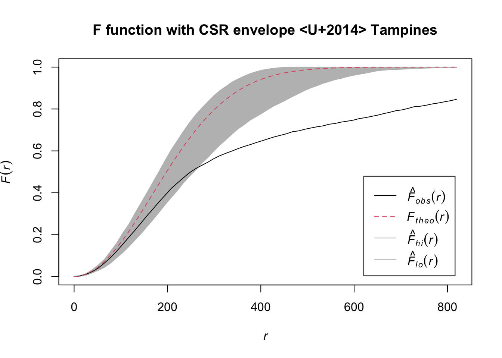
ImportantF and G point in opposite directions, and that is correct
G above the envelope and F below the envelope look like contradictory results but are the same finding stated twice: G is measured from events, F from empty space. A clustered pattern has short event-to-event distances (G up) and large voids between clusters (F down). If both pointed the same way, one of them would be wrong.
The computed table in section 10 confirms this holds in both study areas: G leaves its envelope upward, F leaves its envelope downward, and K and L leave theirs upward. Four statistics built on different distance definitions all reject CSR, consistently.
One caveat I want on the record. An earlier run of this page, before I fixed the seed, produced an F-function for Choa Chu Kang that never left its envelope at all — the opposite significance verdict from the one shown here. With only 74 points and 99 simulations, F in Choa Chu Kang is marginal enough that the answer moved with the simulation draw. G, K and L did not move. That is the concrete reason the seed is now fixed at the top of this page, and a warning against quoting a borderline Monte Carlo result as though it were stable. If this were assessed work with consequences I would raise nsim for F specifically rather than rely on a single draw.
8. K-Function: Cumulative Counts
The K-function counts, for each event, how many other events fall within a distance r, averaged and scaled by intensity. Unlike G and F it uses all neighbour distances, not just the nearest, so it describes the pattern across a range of scales at once.
8.1 Choa Chu Kang
K_ck <- Kest(childcare_cck_ppp, correction = "Ripley")
plot(K_ck, . - r ~ r, ylab = "K(d) - r", xlab = "d (m)",
main = "K function — Choa Chu Kang")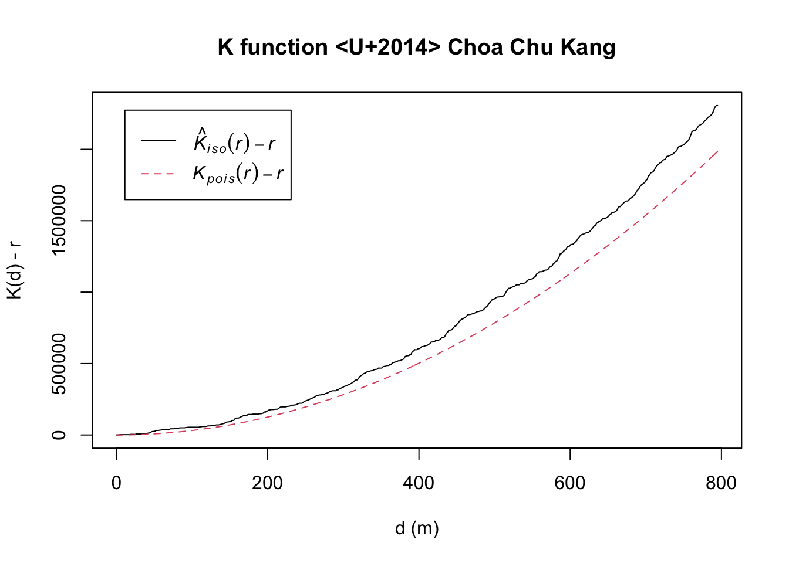
K_ck.csr <- envelope(childcare_cck_ppp, Kest, nsim = 99, rank = 1, glocal = TRUE)Generating 99 simulated realisations of CSR ...
1, 2, 3, 4, 5, 6, 7, 8, 9, 10, 11, 12, 13, 14, 15, 16, 17, 18, 19, 20,
21, 22, 23, 24, 25, 26, 27, 28, 29, 30, 31, 32, 33, 34, 35, 36, 37, 38, 39, 40,
41, 42, 43, 44, 45, 46, 47, 48, 49, 50, 51, 52, 53, 54, 55, 56, 57, 58, 59, 60,
61, 62, 63, 64, 65, 66, 67, 68, 69, 70, 71, 72, 73, 74, 75, 76, 77, 78, 79, 80,
81, 82, 83, 84, 85, 86, 87, 88, 89, 90, 91, 92, 93, 94, 95, 96, 97, 98,
99.
Done.plot(K_ck.csr, . - r ~ r, xlab = "d (m)", ylab = "K(d) - r",
main = "K function with CSR envelope — Choa Chu Kang")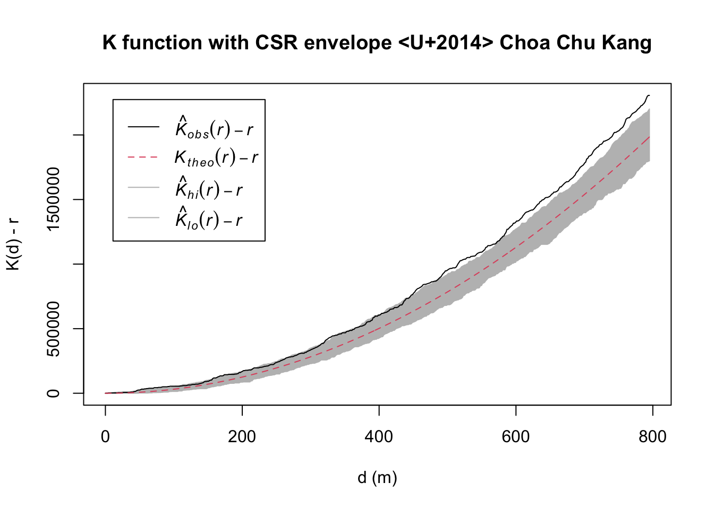
8.2 Tampines
K_tm <- Kest(childcare_tm_ppp, correction = "Ripley")
plot(K_tm, . - r ~ r,
ylab = "K(d) - r", xlab = "d (m)", xlim = c(0, 1000),
main = "K function — Tampines")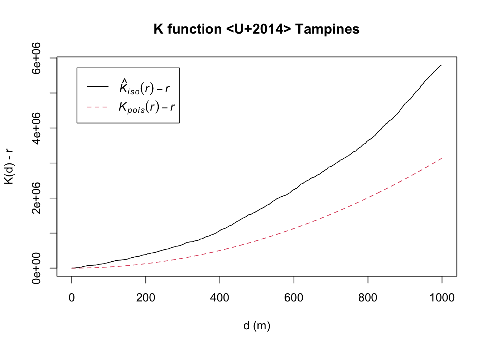
K_tm.csr <- envelope(childcare_tm_ppp, Kest, nsim = 99, rank = 1, glocal = TRUE)Generating 99 simulated realisations of CSR ...
1, 2, 3, 4, 5, 6, 7, 8, 9, 10, 11, 12, 13, 14, 15, 16, 17, 18, 19, 20,
21, 22, 23, 24, 25, 26, 27, 28, 29, 30, 31, 32, 33, 34, 35, 36, 37, 38, 39, 40,
41, 42, 43, 44, 45, 46, 47, 48, 49, 50, 51, 52, 53, 54, 55, 56, 57, 58, 59, 60,
61, 62, 63, 64, 65, 66, 67, 68, 69, 70, 71, 72, 73, 74, 75, 76, 77, 78, 79, 80,
81, 82, 83, 84, 85, 86, 87, 88, 89, 90, 91, 92, 93, 94, 95, 96, 97, 98,
99.
Done.plot(K_tm.csr, . - r ~ r, xlab = "d (m)", ylab = "K(d) - r", xlim = c(0, 500),
main = "K function with CSR envelope — Tampines")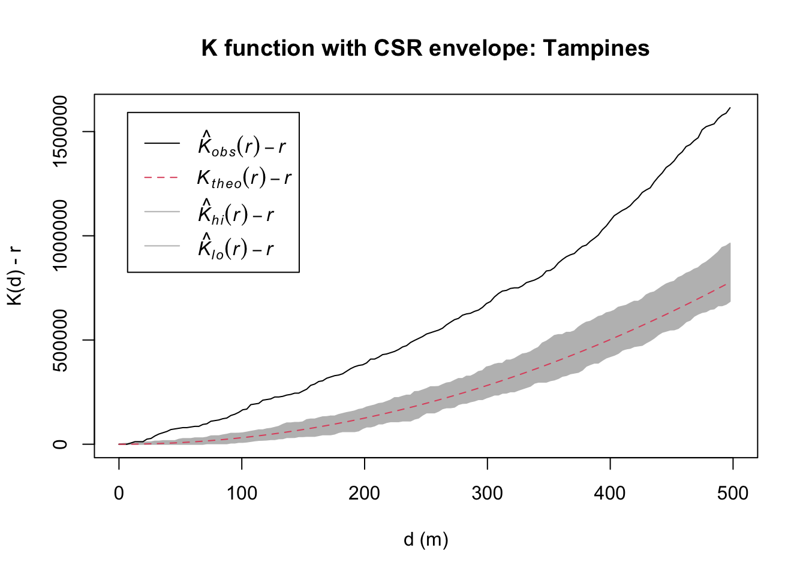
9. L-Function
L is K transformed so that CSR is a flat line at zero, which makes deviations far easier to read off a plot than K’s rising curve.
9.1 Choa Chu Kang
L_ck <- Lest(childcare_cck_ppp, correction = "Ripley")
plot(L_ck, . - r ~ r, ylab = "L(d) - r", xlab = "d (m)",
main = "L function — Choa Chu Kang")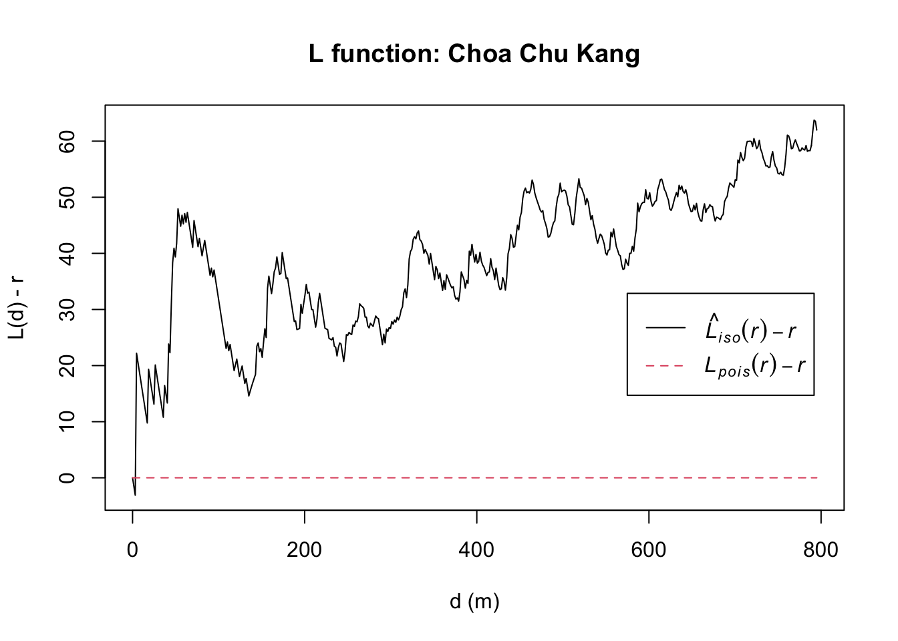
L_ck.csr <- envelope(childcare_cck_ppp, Lest, nsim = 99, rank = 1, glocal = TRUE)Generating 99 simulated realisations of CSR ...
1, 2, 3, 4, 5, 6, 7, 8, 9, 10, 11, 12, 13, 14, 15, 16, 17,
[1:31:56 remaining, estimate finish 2026-09-13 13:50:47]
18,
[1:25:32 remaining, estimate finish 2026-09-13 13:44:23]
19,
[1:19:50 remaining, estimate finish 2026-09-13 13:38:42]
20,
[1:14:46 remaining, estimate finish 2026-09-13 13:33:40]
21,
[1:10:08 remaining, estimate finish 2026-09-13 13:29:02]
22,
[1:05:57 remaining, estimate finish 2026-09-13 13:24:51]
23,
[1:02:09 remaining, estimate finish 2026-09-13 13:21:03]
24,
[58:40 remaining, estimate finish 2026-09-13 13:17:34]
25,
[55:29 remaining, estimate finish 2026-09-13 13:14:23]
26,
[52:33 remaining, estimate finish 2026-09-13 13:11:27]
27,
[49:50 remaining, estimate finish 2026-09-13 13:08:44]
28,
[47:19 remaining, estimate finish 2026-09-13 13:06:13]
29,
[45:00 remaining, estimate finish 2026-09-13 13:03:54]
30,
[42:49 remaining, estimate finish 2026-09-13 13:01:44]
31,
[40:48 remaining, estimate finish 2026-09-13 12:59:42]
32,
[38:54 remaining, estimate finish 2026-09-13 12:57:48]
33,
[37:08 remaining, estimate finish 2026-09-13 12:56:02]
34,
[35:27 remaining, estimate finish 2026-09-13 12:54:22]
35,
[33:53 remaining, estimate finish 2026-09-13 12:52:48]
36,
[32:24 remaining, estimate finish 2026-09-13 12:51:19]
37,
[31:00 remaining, estimate finish 2026-09-13 12:49:55]
38,
[29:42 remaining, estimate finish 2026-09-13 12:48:37]
39,
[28:27 remaining, estimate finish 2026-09-13 12:47:22]
40,
[27:15 remaining, estimate finish 2026-09-13 12:46:11]
41,
[49:32 remaining, estimate finish 2026-09-13 13:24:36]
42,
[47:30 remaining, estimate finish 2026-09-13 13:22:35]
43,
[45:35 remaining, estimate finish 2026-09-13 13:20:40]
44,
[43:44 remaining, estimate finish 2026-09-13 13:18:50]
45,
[41:59 remaining, estimate finish 2026-09-13 13:17:06]
46,
[40:18 remaining, estimate finish 2026-09-13 13:15:25]
47,
[38:41 remaining, estimate finish 2026-09-13 13:13:48]
48,
[37:08 remaining, estimate finish 2026-09-13 13:12:15]
49,
[35:39 remaining, estimate finish 2026-09-13 13:10:46]
50,
[34:13 remaining, estimate finish 2026-09-13 13:09:21]
51,
[32:51 remaining, estimate finish 2026-09-13 13:07:59]
52,
[31:32 remaining, estimate finish 2026-09-13 13:06:40]
53,
[30:16 remaining, estimate finish 2026-09-13 13:05:24]
54,
[29:03 remaining, estimate finish 2026-09-13 13:04:11]
55,
[27:53 remaining, estimate finish 2026-09-13 13:03:01]
56,
[26:46 remaining, estimate finish 2026-09-13 13:01:53]
57,
[25:40 remaining, estimate finish 2026-09-13 13:00:48]
58,
[24:37 remaining, estimate finish 2026-09-13 12:59:45]
59,
[23:36 remaining, estimate finish 2026-09-13 12:58:44]
60,
[22:38 remaining, estimate finish 2026-09-13 12:57:46]
61,
[21:41 remaining, estimate finish 2026-09-13 12:56:49]
62,
[20:46 remaining, estimate finish 2026-09-13 12:55:54]
63,
[25:03 remaining, estimate finish 2026-09-13 13:09:06]
64,
[23:59 remaining, estimate finish 2026-09-13 13:08:03]
65,
[22:56 remaining, estimate finish 2026-09-13 13:07:01]
66,
[21:55 remaining, estimate finish 2026-09-13 13:06:00]
67,
[20:56 remaining, estimate finish 2026-09-13 13:05:01]
68,
[19:59 remaining, estimate finish 2026-09-13 13:04:03]
69,
[19:03 remaining, estimate finish 2026-09-13 13:03:08]
70,
[18:09 remaining, estimate finish 2026-09-13 13:02:14]
71,
[17:16 remaining, estimate finish 2026-09-13 13:01:21]
72,
[16:25 remaining, estimate finish 2026-09-13 13:00:30]
73,
[15:36 remaining, estimate finish 2026-09-13 12:59:41]
74,
[14:47 remaining, estimate finish 2026-09-13 12:58:52]
75,
[14:00 remaining, estimate finish 2026-09-13 12:58:06]
76,
[13:15 remaining, estimate finish 2026-09-13 12:57:20]
77,
[12:30 remaining, estimate finish 2026-09-13 12:56:35]
78,
[11:47 remaining, estimate finish 2026-09-13 12:55:52]
79,
[11:04 remaining, estimate finish 2026-09-13 12:55:10]
80,
[10:23 remaining, estimate finish 2026-09-13 12:54:29]
81, [9:43 remaining] 82, [9:04 remaining] 83, [8:26 remaining] 84, [7:48 remaining] 85, [7:12 remaining] 86, [6:36 remaining] 87, [6:02 remaining] 88, [5:28 remaining] 89, [4:55 remaining] 90, [4:22 remaining] 91, [3:50 remaining] 92, [3:19 remaining] 93, [2:49 remaining] 94, [2:19 remaining] 95, [1:50 remaining] 96, [1:22 remaining] 97, [54 sec remaining] 98, [27 sec remaining]
99.
Done.plot(L_ck.csr, . - r ~ r, xlab = "d (m)", ylab = "L(d) - r",
main = "L function with CSR envelope — Choa Chu Kang")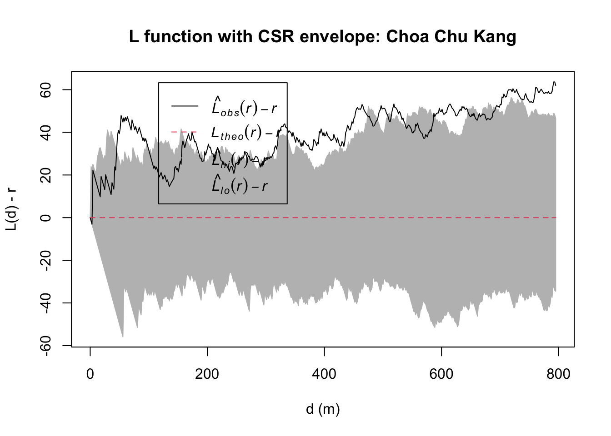
9.2 Tampines
L_tm <- Lest(childcare_tm_ppp, correction = "Ripley")
plot(L_tm, . - r ~ r, ylab = "L(d) - r", xlab = "d (m)", xlim = c(0, 1000),
main = "L function — Tampines")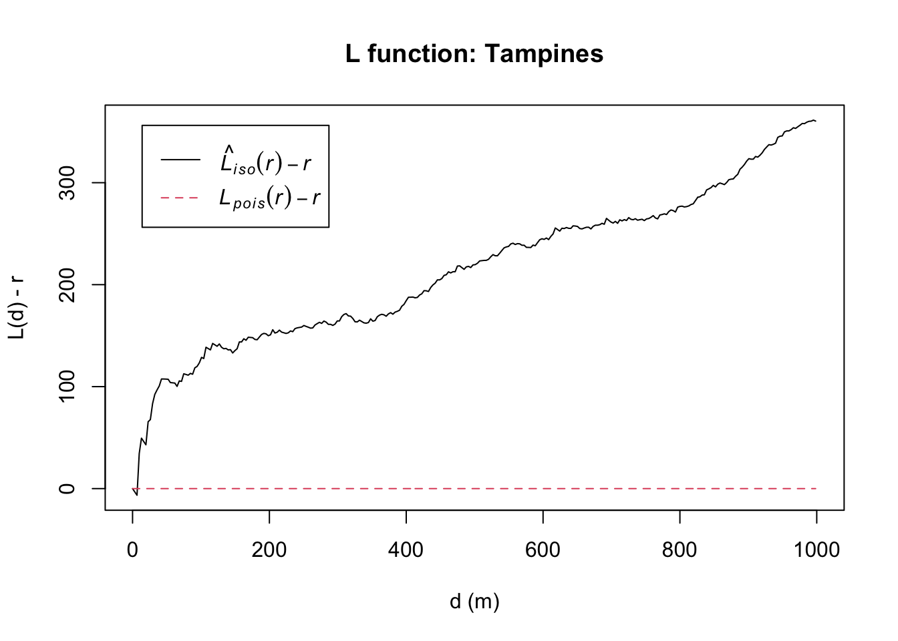
L_tm.csr <- envelope(childcare_tm_ppp, Lest, nsim = 99, rank = 1, glocal = TRUE)Generating 99 simulated realisations of CSR ...
1, 2, 3, 4, 5, 6, 7, 8, 9, 10, 11, 12, 13, 14, 15, 16, 17, 18, 19, 20,
21, 22, 23, 24, 25, 26, 27, 28, 29, 30, 31, 32, 33, 34, 35, 36, 37, 38, 39, 40,
41, 42, 43, 44, 45, 46, 47, 48, 49, 50, 51, 52, 53, 54, 55, 56, 57, 58, 59, 60,
61, 62, 63, 64, 65, 66, 67, 68, 69, 70, 71, 72, 73, 74, 75, 76, 77, 78, 79, 80,
81, 82, 83, 84, 85, 86, 87, 88, 89, 90, 91, 92, 93, 94, 95, 96, 97, 98,
99.
Done.plot(L_tm.csr, . - r ~ r, xlab = "d (m)", ylab = "L(d) - r", xlim = c(0, 500),
main = "L function with CSR envelope — Tampines")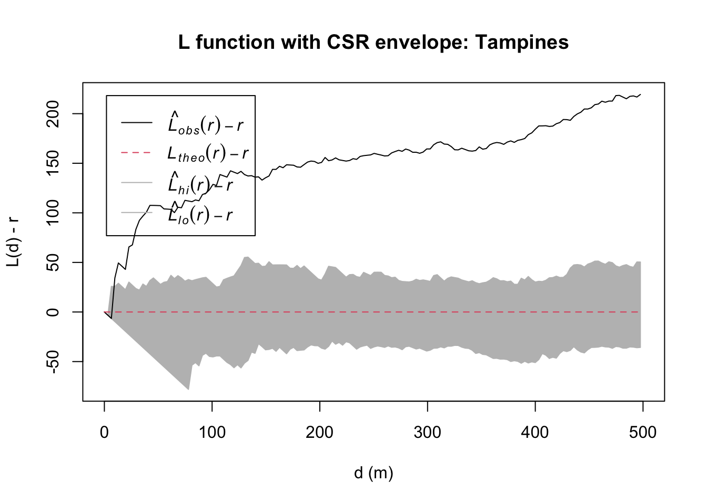
10. Where Each Curve Leaves Its Envelope
Reading significance off eight plots by eye is unreliable, so I compute it directly. For G, K and L a departure above the upper envelope indicates clustering; for F a departure below the lower envelope does.
crossing <- function(env, side) {
d <- if (side == "above") env$r[env$obs > env$hi] else env$r[env$obs < env$lo]
d <- d[!is.na(d)]
if (length(d) == 0) "never leaves envelope"
else paste0(round(min(d)), "-", round(max(d)), " m")
}
data.frame(
Function = c("G", "F", "K", "L"),
Direction = c("above", "below", "above", "above"),
`Choa Chu Kang` = c(crossing(G_CK.csr, "above"), crossing(F_CK.csr, "below"),
crossing(K_ck.csr, "above"), crossing(L_ck.csr, "above")),
Tampines = c(crossing(G_tm.csr, "above"), crossing(F_tm.csr, "below"),
crossing(K_tm.csr, "above"), crossing(L_tm.csr, "above")),
check.names = FALSE
) Function Direction Choa Chu Kang Tampines
1 G above 46-101 m 8-340 m
2 F below 279-484 m 273-819 m
3 K above 45-795 m 10-1665 m
4 L above 47-795 m 10-1665 m11. What I Take From This Exercise
All four functions agree. In both Choa Chu Kang and Tampines, G, K and L rise above their envelopes and F falls below its own — four different statistics, built on different distance definitions, all rejecting complete spatial randomness in the same direction. Childcare centres in both towns are clustered.
The agreement is firmer in Tampines than in Choa Chu Kang. Tampines has 117 points to Choa Chu Kang’s 74, its curves leave the envelopes earlier and stay outside them longer, and its F result was stable across simulation draws where Choa Chu Kang’s was not.
Scale is the real finding. What matters is not that the curves leave the envelope but over what range, and the table in section 10 makes two things obvious. First, K departs over a far wider range than G in both areas — unsurprising, since K counts all neighbours rather than only the nearest, so it detects clustering that nearest-neighbour distances alone miss. Second, the two towns cluster at genuinely different scales: Tampines stays outside its K envelope well past a kilometre, while Choa Chu Kang returns inside it several hundred metres earlier. Those are two different spatial processes, and calling both simply “clustered” would throw the distinction away. A first-order KDE could not have told me any of this, because KDE has no notion of scale-dependent interaction.
What I got wrong, twice. First I read the F-function plot as contradicting the G-function plot and assumed I had mis-specified the edge correction. The two functions are supposed to point in opposite directions for a clustered pattern; writing out what each one measures from — events for G, empty space for F — fixed that.
The second mistake was the instructive one. I wrote up the significance verdicts from reading the plots, then built the table in section 10 to compute them properly, and the F result for Choa Chu Kang came out differently from what I had written. Chasing it down, the cause was not a coding error but an unfixed random seed: F in that area is close enough to its envelope that the verdict moved between simulation runs. Two lessons out of one bug — compute the crossing points rather than eyeballing them, and fix the seed before writing any sentence that depends on a Monte Carlo result.
Limitation, again. Every test here compares the observed pattern to complete spatial randomness within the planning area polygon. But a childcare centre cannot be sited in a canal, a cemetery, a reservoir or an expressway interchange, and a meaningful share of both study areas is exactly that. The CSR null is therefore slightly too generous, and some of the measured “clustering” is really just “buildings are where buildings can be”. The honest fix is an inhomogeneous null (Kinhom, Linhom) fitted to a population or land-use covariate rather than a homogeneous CSR, which is where I would take this next.
This is not a hypothetical worry. In Hands-on Exercise 3 I run the network-constrained equivalent of the K-function on Punggol, where the null only scatters simulated points along roads rather than anywhere inside the polygon — and the result flips from clustering to regularity. Some of what this page measures as clustering is the shape of the study area, not the behaviour of childcare operators.